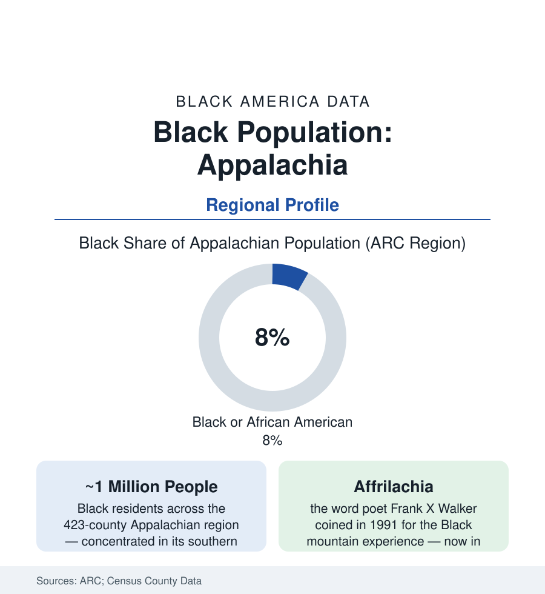

Black Census
Black Appalachia: A Million People the Mountain Story Forgot to Count
Appalachia's Black residents — coal miners' grandchildren, steel families, and the Affrilachian poets — number near a million across the region's counties. The data portrait.

The national picture of Appalachia — white, rural, coal-dusted — is a demographic partial truth that erases roughly a million people: the Black residents of the 423-county Appalachian region, about eight percent of its population in the regional commission's data, whose families dug its coal, poured its steel, and built towns the mountain story rarely mentions. The poet Frank X Walker gave the erasure a name by giving the people one — Affrilachian, coined in 1991, now the dictionary's word for Black Appalachia. This article counts what the stereotype skipped.
How Black Appalachia Was Built
The region's Black population has two deep strata in the census record: the enslaved and free Black communities of the mountain South's agricultural counties (the tobacco and hemp country of Kentucky's and Virginia's Appalachian edges, the salt works of the Kanawha valley — built substantially on enslaved labor in the industrial record) and the great industrial recruitment: the coal operators of the early twentieth century importing Black miners from the Deep South by the trainload into the West Virginia, eastern Kentucky, and Virginia coalfields (the company towns of McDowell and Logan counties at their peaks a third or more Black in the census rows — the coal-camp churches, schools, and lodges of a mountain Black society), and the steel and factory cities of the region's rim (the Birmingham district at Appalachia's southern foot — its own profile in this atlas — the Youngstown and Pittsburgh orbits, Chattanooga, Asheville, Knoxville, Charleston WV's chemical valley with its Black professional class). The coal counties' Black populations rode the industry's curve in the county data: the mechanization exodus of the 1950s (the Delta file's mirror — the mountain-to-Chicago and mountain-to-Detroit lines, Cleveland and Cincinnati filled with coal-camp grandchildren), the towns thinning to their elders, the recent decades' small stabilization in the southern tier's suburbs and the region's Black growth poles (the Atlanta exurbs inside the ARC map's Georgia counties, the Greenville-Spartanburg corridor, the North Carolina foothills' manufacturing belt).
The Modern Ledger
The current data draw the region's Black population in two exposures at once: the coalfield remnant (McDowell County, West Virginia — once near a fifth Black on coal money and majority-minority in its coal-era towns' descendants — today a fraction of its peak population, its Black residents among the last keepers of the company-town world, the county's poverty and health data at the national floor beside the Delta's) and the metropolitan Appalachian Black middle class of the rim cities (the Charleston, Knoxville, Asheville, and Chattanooga files within this section's city profiles; the Birmingham and Youngstown anchors; the state-university towns). The distinctively Appalachian rows in the data are the health and industry files' overlaps: the black-lung and mining-disability data's Black miners (the pneumoconiosis file's claimants in the federal trust data), the opioid era's mountain curve arriving in communities the treatment map reaches last, the land file's mountain version (the heirs'-property tangle of the ridges, the Black-owned farm and timber land of the southern counties in the agricultural census), and the political data's slow change (the region's Black elected officials concentrated in its cities and its southern tier, the coalfield counties' Black officeholders of the coal era largely a historical record now — the population that sustained them dispersed to Ohio). The cultural counter-record is the file's living half: the Affrilachian Poets' collective and its literary school, the Black banjo and string-band scholarship reclaiming the mountain music's African roots (the banjo itself an African instrument — the musicology now standard), the heritage centers and the Juneteenth observances of the coal towns — a culture insisting, with data and art alike, that it was always there.
Reading Appalachia's Numbers
Eight percent of a region the country pictures at zero: Black Appalachia is this section's lesson in how a stereotype does a census's erasing for free. The million people in the regional commission's tables dug the coal that lit the cities their grandchildren moved to, and kept towns in the hollows the whole way down and partway back. The count was never missing. Only the picture was. Walker's word did what the best data do: it made a population visible by naming it, and the counts have been easier to say out loud ever since.
More in Black Census
The Black Population of the United States: Size, Definitions, and Distribution
The Black population of the United States totals 52.8 million — 15.4 percent of the nation. How the Census Bureau defines and counts the population, and where it lives.
Black Median Household Income in the United States
Black median household income stands at $56,490 in the Census Bureau's annual income report — how the figure is measured, how it compares, and what drives it.
The Black Poverty Rate: Levels, Children, and the Long Trend
The official Black poverty rate is 17.1 percent — against 11.1 percent nationally and 7.7 percent for non-Hispanic White Americans. How poverty is measured and what the data show.
Source: Appalachian Regional Commission; U.S. Census Bureau, 2020 Census and American Community Survey county data; Affrilachian Poets and Frank X Walker records; West Virginia archives.